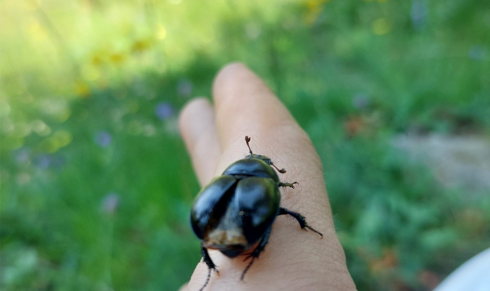

Monitorare la diversità intraspecifica dei coleotteri stercorari con il DNA metabarcoding
Abbiamo usato il metabarcoding non solo per identificare le specie di coleotteri stercorari, ma la variabilità genetica al loro interno.

Coleottero stercorario raccolto durante un transetto sul campo.
I coleotteri stercorari sono insetti che utilizzano lo sterco per nutrirsi e riprodursi. Ampiamente diffusi su tutto il territorio italiano, rappresentano un gruppo particolarmente carismatico. La specie più conosciuta è probabilmente Sisyphus schaefferi, nota per la capacità di modellare palline di sterco e spingerle a ritroso con le zampe posteriori. Questi insetti svolgono un ruolo fondamentale negli ambienti di pascolo poiché rimuovono gran parte delle deiezioni animali, promuovendo al contempo preziosi servizi ecosistemici come la fertilizzazione del suolo e il contenimento degli organismi nocivi.
Oltre al loro valore ecologico, gli stercorari rappresentano degli organismi modello ideali per esplorare le potenzialità del DNA metabarcoding nell'indagare i pattern di diversità intraspecifica. In primo luogo, sono facilmente identificabili a livello di specie tramite metodi morfologici tradizionali, caratteristica che li rende perfetti per validare i risultati molecolari. In secondo luogo, mostrano una distribuzione geografica eterogenea, legata sia alle preferenze ambientali (alcune specie prediligono climi freddi, altre ambienti più caldi) sia alle differenti capacità di volo (da ottimi volatori a specie con spostamenti molto limitati).
Nell'ambito di META2, un progetto PRIN finanziato dal MUR, abbiamo raccolto individui in aree geografiche distanti tra loro da 50 a 100 km per individuare eventuali segnali di isolamento genetico attraverso il DNA metabarcoding. I risultati ottenuti sono molto interessanti: alcune specie mostrano un chiaro isolamento, condividendo pochissime varianti genetiche tra aree distanti; altre specie, al contrario, presentano varianti diffuse e omogenee in tutte le zone studiate.
Questo studio dimostra come il metabarcoding abbia il potenziale di trasformare il modo in cui facciamo conservazione, offrendo una misura precisa della connettività tra le popolazioni.
Il vantaggio applicativo risponde a un quesito fondamentale: può una popolazione estinta localmente a causa di attività antropiche ricolonizzare l'area grazie alla dispersione di individui provenienti da popolazioni geograficamente separate? Potete approfondire l’argomento qui: www.metasquared.unito.it.